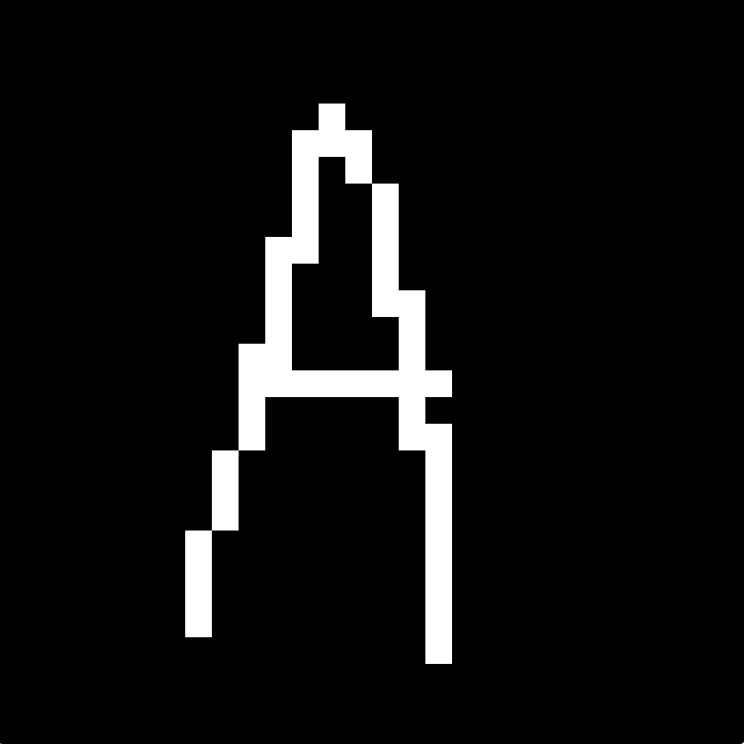

Raytracer
A quick project I coded in JavaScript from scratch (including 3d objects and vector calculus) to learn more about the ray-tracing process.
The program supports materials with different roughness, color, and emmission properties.
See it in action here.

Character Recognition with Machine Learning
A custom neural network to recognize upper and lowercase letters as well as numbers.
It was a project I worked on with a friend in our freshman year of high school, before LLMs and chatGPT were a thing.
We both wanted to better understand how neural networks functioned mathematically, so we decided to build one from scratch from arrays and floats.
The training was done in python, and the weights were used in JavaScript to create an interactive website.
Try it out here.